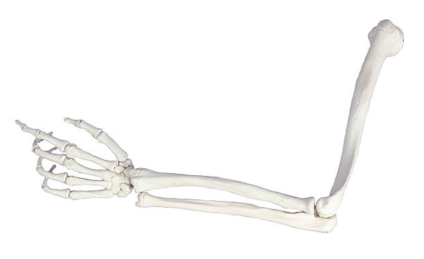

|  |
Rameni pojas čine parne kosti: ključne kosti i lopatice. One povezuju grudni koš i ruke. Ruka se sastoji od nadlaktice, podlaktice i šake. Nadlakticu izgrađuje ramena kost, preko ramenog zgloba povezana je sa ramenim pojasom, a lakatnim zglobom s kostima pdlaktice. Podlaktica je izgrađena od lakatne kosti, koja ne dozvoljava savijanje ruke unazad, i žbice, koja okreće šaku. Šaka se satoji od 27 kostiju.
|